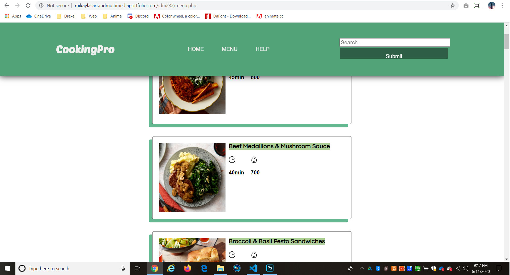

CookingPro

What Is CookingPro?
CookingPro is the new rebranded redesign of Blue Apron. Blue Apron is a website that provides users with cooking recipes and offers to ship it's ingredients right at your doorstep. I wanted to redesign Blue Apron to give the website a different layout then it has currently. I felt like the website's current design could present itself in a way that users can understand how to find the information they need.
Context & Challenge
Blue Apron is an online cookbook that provides users with recipes. The problem Blue Apron has is that it's design is more traditional and it's unclear where to get started as a user. I wanted to solve this solution by coming up with a new design that fits the cookbook theme and reorganizing the website's contents in a way that users can easily find what they are looking for.
Process & Insight
For the color scheme, I stuck with a mainly green theme since the color green represents outdoors and has a fresh feel to it. I also thought incorporating green would be a great way to let users know this website is vegan-friendly.
In my wireframes, I got rid of the side navigation menu for mobile and decided to layout the menu links in the top header so users will knows exactly how to navigate threw all of the pages. I also decided to add a section where featured specials are shown on the home page. This is a great way for users to know what recipes are trending or popular. For each recipe, I decided to display it as a card where the recipe image, name, calories, and time are displayed.
The Solution
You can visit CookingPro at the following link: Link to the Prototype